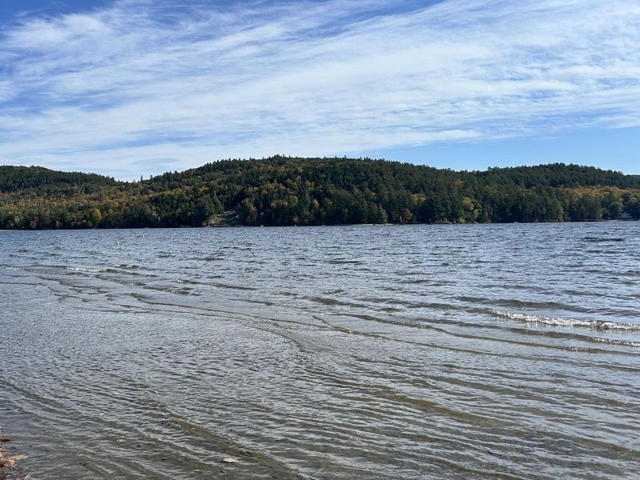

MJN Realty
About
MJN Realty was founded by Matthew Nothdurft.
Matthew Nothdurft
Founder & CEO
Matthew Nothdurft is the founder and CEO of MJN Realty.
Born in the Adirondacks and raised on its lakes and trails, Matthew Nothdurft leads MJN Realty with a deep love for the region he calls home.
The company
MJN Realty is a full-service property management and real estate company covering the Lake George and Schroon Lake regions of New York, including Hayes House at Schroon Lake.
What sets us apart is a hands-on, personal approach. From routine check-ins to coordinating repairs with the right contractors and vendors, we treat every property like our own. Beyond the work itself, Matthew is a local resource for the area. PADI scuba certified, boater's licensed, and an e-bike enthusiast, he knows the Adirondacks inside and out and is glad to point you toward the best of what the region has to offer.
